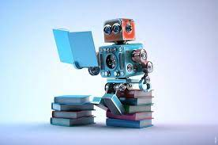
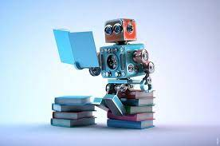

Maskinlæring er en gren af kunstig intelligens, der involverer at give computere evnen til at lære og forbedre sig selv uden at skulle blive programmeret direkte. Dette opnås ved at anvende matematiske algoritmer og statistiske modeller til at træne computeren på store datamængder, så den kan identificere mønstre og sammenhænge og dermed opdage vigtige oplysninger. Maskinlæring kan anvendes i en lang række forskellige områder, herunder i sundhedsvæsenet til at identificere sygdomme og finde de mest effektive behandlinger, i finanssektoren til at forudsige investeringsresultater og minimere risici, i e-handel til at forudsige kunders præferencer og optimere markedsføringstilbud og i mange andre brancher. En af de største fordele ved maskinlæring er, at den kan håndtere store mængder af komplekse data og finde mønstre og sammenhænge, som mennesker måske ikke ville være i stand til at opdage. Dette giver virksomheder og organisationer mulighed for at træffe mere informerede beslutninger og opnå bedre resultater. Maskinlæring vil sandsynligvis fortsætte med at udvikle sig og forbedre sig i de kommende år, og der er store muligheder for, at det vil have en betydelig indvirkning på mange forskellige aspekter af vores liv.